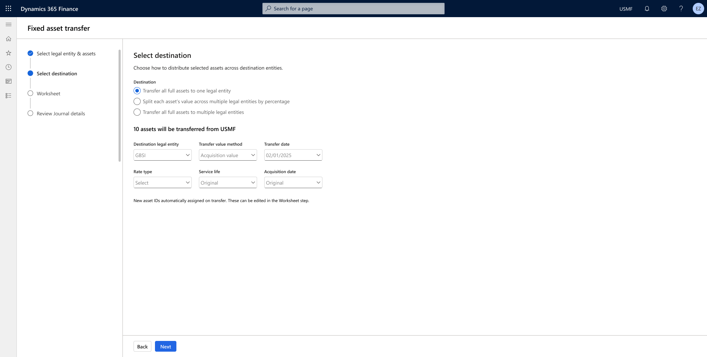
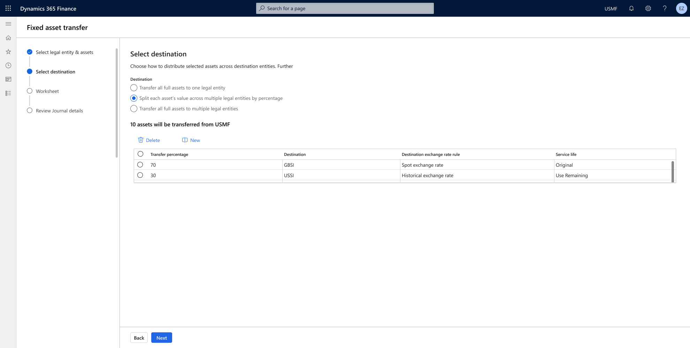
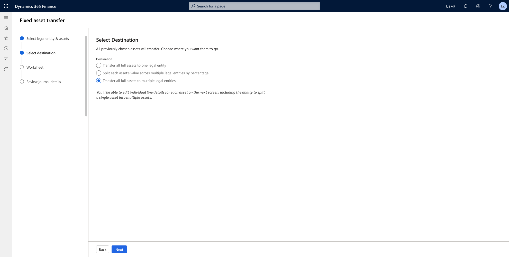

Fixed Asset Transfer Experience
Redesigning the end-to-end workflow for transferring fixed assets between legal entities, reducing errors and manual effort for accountants.
Why what & how
Currently, transferring fixed assets between legal entities is a manual, time-consuming process. Accountants must dispose of the asset in one company and manually acquire it in another, increasing the risk of errors and data inconsistencies. The process lacks integrated tools for seamless transfers, especially when asset splits are needed.
Why are we solving
- Manual process that required switching between LE to complete the transfer process.
- Manual filling in of data results in errors
- There is no current way to track history of the transfer
- The current process demands her to calculate the split & change flows which results in errors
- There is no way currently to transfer assets in bulk and single selection process of transferring assets is time consuming
Who are we solving for
Accountants handling the fixed asset transfer in period end close
Customer painpoints
- Manual process that required switching between LE to complete the transfer process.
- Manual filling in of data results in errors
- There is no current way to track history of the transfer
- The current process demands her to calculate the split & change flows which results in errors
- There is no way currently to transfer assets in bulk and single selection process of transferring assets is time consuming
Design direction
Launched Designs 2025



The design aims to present users with three clear options for transferring fixed assets, allowing them to choose one at a time. This approach helps users mentally map out their next steps and confidently select the option that best fits their needs.
*Will walk through launched build and draft work during the interview session
Success metric
- Seamless switching between Legal entities
- Allowing users to transfer fixed assets swiftly and error-free, eliminating the need for manual data input
- Allowing users to track history of the transfer easily
- Allowing splitting of assets simply as the data demands
- User can transfer data collectively in bulk to save time on the process